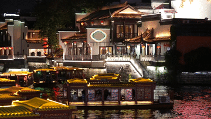
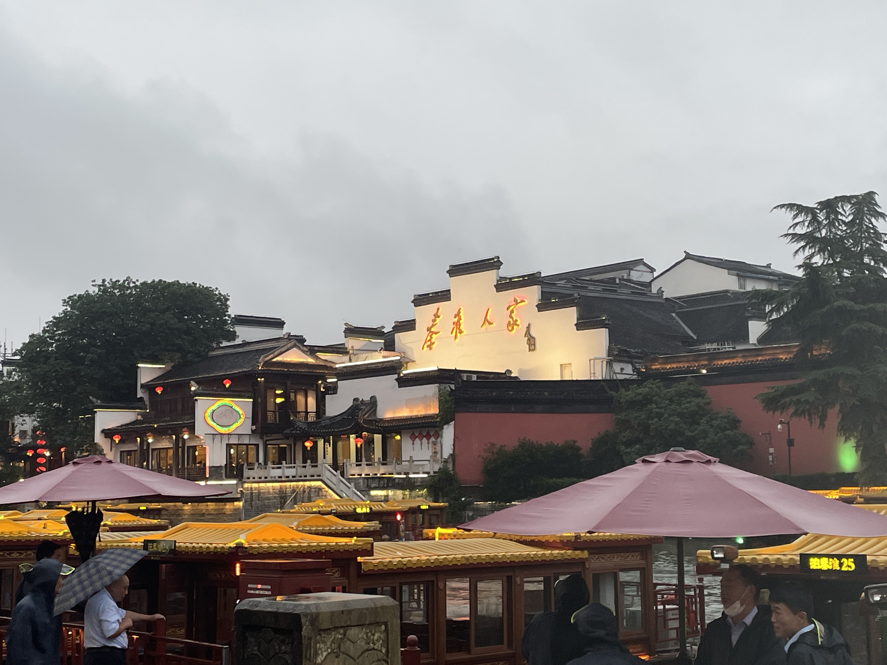
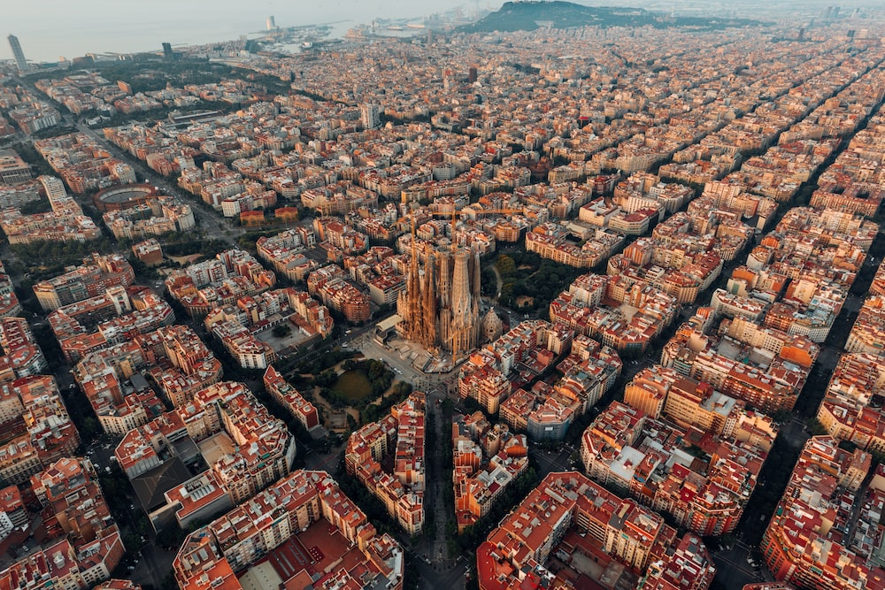

Travel
Nanjing Fuzi-Qinhuai

Nanjing is a popular city full of Chinese history and old traditional southern kinds of agriculture. As a northern people from China, Nanjing was the first city that I traveled to the region south of the Yangtze River. Confucius Temple - Qinhuai River is the most famous place to show the beauty of Nanjing.
Confucius temple has many traditional temple agricultures inside and many small shops about traditional Nanjing specialties and popular restaurants. There are also many colorful traditional lanterns which made the night of qinhuai more gorgeous. People can also take the “Hua Fang” ( a special kind of ship) to travel around the river and the whole scenery.
Photo Gallery

Taken in the evening on the other side of the Qinhuai River.
At About 7 pm at night when the lights and lanterns turn on.

Inside the Jiangnan Examination Hall at night.

At night stand on the side of the corridor.

Upward view at night inside the Jiangnan Examination Hall.
Barcelona, Spain

Barcelona, is a beautiful city on the Northeastern coast of Spain that is the byproduct of a rich and artistic history with modern infrastructure. One of the main attractions of the city is its gorgeous architecture, often the work of world renowned architects such as Antoni Gaudi. Some of the most notable works are the modern Basilica of La Sagrada Familia, and the tranquil and eloquent Park Güell.
Much of Barcelona’s charm comes down to local culture, from diverse culinary offerings, to the sunny vacation-ridden atmosphere of the beaches, and even the symbolism of nationalism and independence that Barcelona residents display. The passion of the locals is unwavering, including in famous soccer matches by one of the sports greatest clubs: F.C. Barcelona, and in numerous local artistry events. It is no wonder why many travelers to Spain feel rejuvenated and fortunate enough to have experienced the city’s irresistibly strong culture and atmosphere.
Photo Gallery

The view from the world famous Park Güell

Barcelona fans demonstrate their passion from the Camp Nou

View of a popular strip on Barcelona’s most famous beach

Stunning display of modern structure with vintage architecture at La Sagrada Familia

Nighttime view of the contrast between modern and classical Barcelona
Sofia, Bulgaria


Sofia is the capital city of Bulgaria, a country located in Eastern Europe. It is part of the European Union and the primary language spoken is Bulgarian. The city’s population is around 1.3 million. In addition to its urban structures, Sofia also contains a mountain peak called “Vitosha”
Vitosha is located 30 minutes from the capital’s center, and can be reached by foot, car, and by lift. The peak has an elevation of 7,520 feet and during the summer months the average temperature is around 64 degrees fahrenheit. This makes it a great sight for any type of traveler who seeks the outdoors.
Photo Gallery

Located in the city’s center, St. Alexander Nevsky Cathedral displays some of Sofia’s grand architecture.

Vitosha boulevard is often packed with both locals and tourists and contains shops, restaurants, live music, and great views.

The peak of Vitosha mountain offers a great view of Sofia from above.

A picturesque street giving insight into the locals' lives and the city’s public transport trams.

One of Sofia’s famous roads, this street is paved with an interesting material: yellow cobblestones. Being one of the first streets in the entire city, it was first paved in 1907 and continues to be maintained to this day.
Mexico City, Mexico


Geographical Location: North America
Mexico City is the capital of Mexico. The city is full of Museums that vary from history, art, and even the history of the Mexican coin. In 2020 the Mexico city total population. was about 9.2 million. The city is 571 miles squared
For tourists, there are places like an amusement park called Feria de Chapultepec and giant zoo Zoológico de Chapultepec that are a must visit. In the photo gallery there are also major attractions to visit.
Photo Gallery

Castillo de Chapultepec (Chapultepec Castle) is a castle that is located in Miguel Hidalgo, Mexico City.

Angel de la independencia (Angel of Independence) is an important monument located in Cuauhtémoc, Mexico City.

Templo Mayor (Mayor Temple) is a museum that is built by the ruins of an ancient temple.

This is the tomb of Margarita Maza de Juarez who was the wife of Benito Juarez (A historical president).
Estadio Azteca is the stadium where the national Mexican soccer team plays and the team Club América.
Linxuan Ji